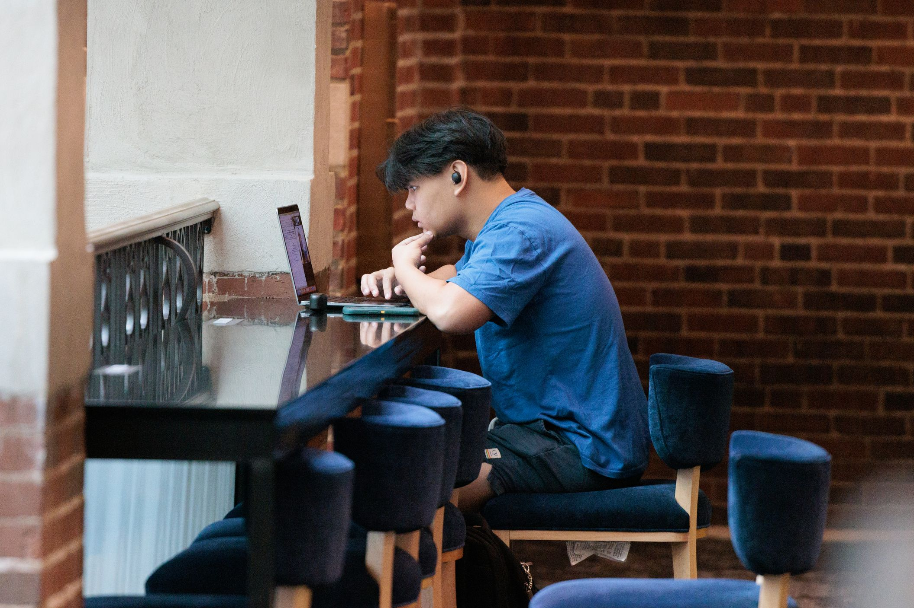

Critical Incident Support & Conflict Management
Support for students who are experiencing or have been impacted by a conflict or critical incident.
Striving for fair and equitable access to food and other basic resources
Support for students who are experiencing or have been impacted by a conflict or critical incident.
Services to help students maintain healthy habits, find access to food, and seek assistance when struggling to buy food.
Support for students who are experiencing or have been impacted by a conflict or critical incident.
Support for students seeking medical, dental or mental health treatment, including resources for securing health insurance and finding care providers.
Campus and community resources for securing housing, accessing transportation, and seeking assistance for a variety of housing needs.
From the quiet corners of the Hatcher Graduate Library to the collaborative environments in the Duderstadt Center, the university provides numerous options for individual and group study.
The campus is filled with numerous places to rejuvenate, offering students and staff a perfect blend of nature, relaxation, and recreational activities.

Ann Arbor is a vibrant city with plenty of places to explore, from the eclectic shops and restaurants on Main Street to the cultural treasures at the Ann Arbor Hands-On Museum.
MSI Academic Advising | UMSI Academic Advising
UoM Student Life | Student Life
CEW+ (Center for the Education of Women+) at the University of Michigan
(734) 764-6360 |
Join Our Mailing List
CAPS
Contact Us:
(734) 764-8312 (24hrs)
caps-uofm@umich.edu
© Copyrights by University of Michigan. All rights reserved.